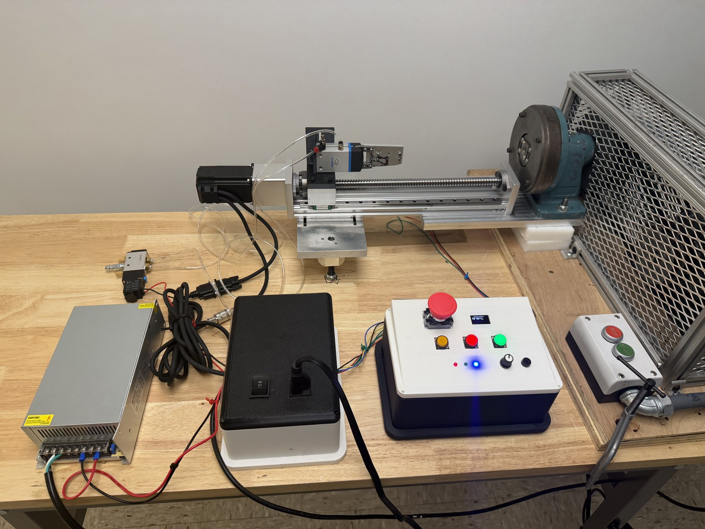
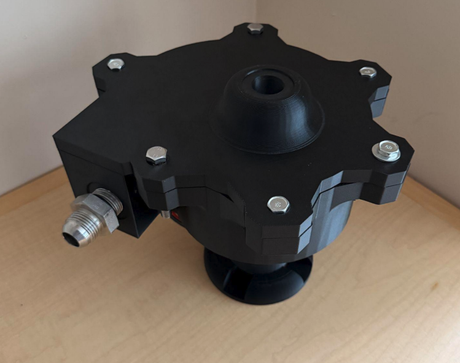
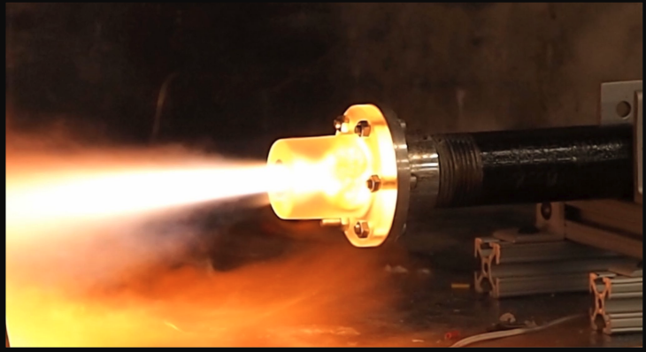
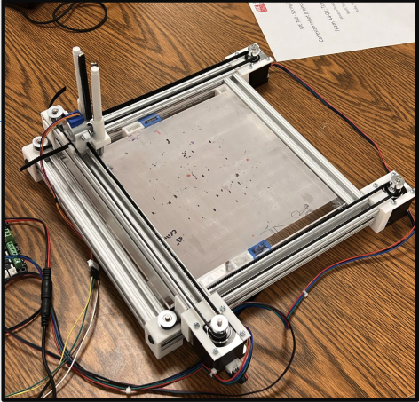
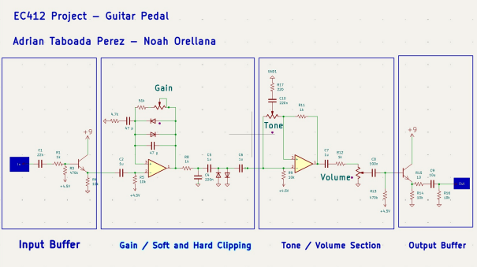
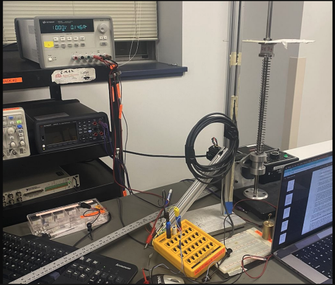
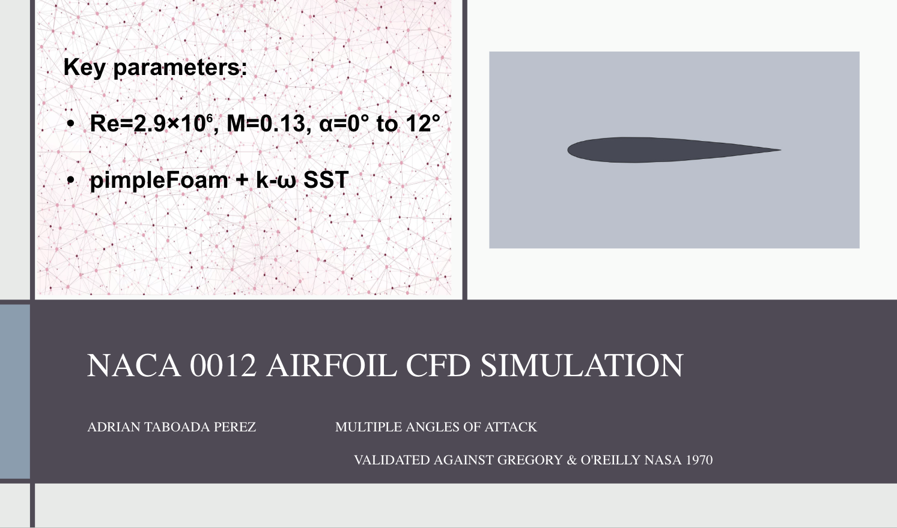
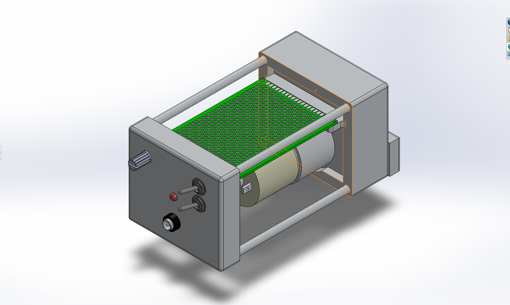
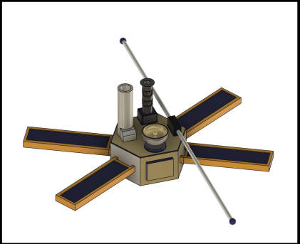

ELECTROMECHANICAL DESIGN · MECHATRONICS · POWER ELECTRONICS · CONTROL SYSTEMS
I graduated from Boston University in May 2026 with a BS in Mechanical Engineering and a minor in Electrical Engineering, and I'm now working on an MS in Mechanical Engineering at Carnegie Mellon University, focusing on robotics and control systems, graduating spring 2028.
My professional interests center on robotics, analog electronics, and power electronics, areas where solving a problem well means understanding both the physical system and the circuit driving it. That inclination toward hands-on problem solving carried into industry as well, where I worked as a field engineer supporting large-scale power systems, collaborating across engineering teams to diagnose and resolve issues on live hardware in the field.








